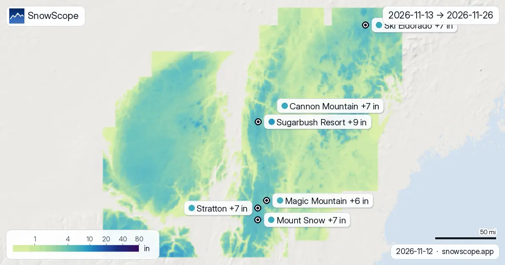

Previsioni neve nel Nord-est degli USA: fino a 4 in a Ski Eldorado entro il 9 novembre
Fino al 9 novembre la nostra previsione indica 4 in (11 cm) a Ski Eldorado e 4 in (10 cm) a Tuckerman Ravine. I valori delle località sono stime del modello per i pendii superiori; le stazioni misurano in un punto, alla data indicata.
Le previsioni neve in tempo reale per Ski Eldorado nell'app SnowScopeAltezza neve, allerte powder e mappa 3D, gratis.
Cosa arriva
La superficie innevata è passata da 4 sq mi (10 km²) il 4 novembre a 0 sq mi (0 km²) oggi, e la nostra previsione indica 178 sq mi (460 km²) il 9 novembre.
| Località | Altezza neve | Neve fresca, 72 h | In arrivo, prossimi giorni | Quota max |
|---|---|---|---|---|
| Ski Eldorado | 0 in (0 cm) | 0 in (0 cm) | 4 in (11 cm) | 2.615 ft (797 m) |
| Tuckerman Ravine | 0 in (0 cm) | 0 in (0 cm) | 4 in (10 cm) | – |
Quota, pendii e quota neve
A Ski Eldorado lo zero termico sale tra 8.957 ft (2.730 m) e 11.352 ft (3.460 m) il 6 novembre, sopra la quota massima della località (2.615 ft (797 m)): quel giorno pioggia o neve bagnata sono possibili su tutti i pendii.
Dove c'è neve oggi
0 località su 111 nel Nord-est degli USA hanno oggi neve sui pendii superiori, e il nostro modello conta 0 sq mi (0 km²) di superficie innevata.
Sicurezza e pericolo valanghe
Le previsioni a qualche giorno possono cambiare: ricontrolla la mappa il giorno prima di partire.
Consigli per sciatori
- Le previsioni a qualche giorno possono cambiare: ricontrolla la mappa il giorno prima di partire.
- Dove lo zero termico sale sopra la località, aspettati neve bagnata e usa gli impianti più alti.
- La neve fresca è migliore nelle prime ore: parti presto, prima del sole e della folla.
- Prima del fuoripista o dello scialpinismo leggi il bollettino valanghe ufficiale (link qui sotto).
- Attiva un avviso powder nell'app SnowScope per sapere quando Ski Eldorado riceve neve fresca.
Su questi numeri
Le altezze neve delle località sono la neve più alta sui pendii superiori secondo il modello neve di SnowScope (circa 1 km, calcolo del 6 novembre); sono stime per un'area, non una misura in un punto. I valori delle stazioni sono misure alla data indicata. Le previsioni possono cambiare. Leggi sempre il bollettino valanghe ufficiale prima del fuoripista.
Bollettini valanghe ufficiali: Mount Washington Avalanche Center
Cita questo articolo
Per ricerca, didattica o stampa: numeri e grafici sono liberamente riutilizzabili con licenza CC BY 4.0 citando così.
SnowScope (2026), Previsioni neve nel Nord-est degli USA: fino a 4 in a Ski Eldorado entro il 9 novembre, https://snowscope.app/blog/it/2026/11/us-northeast-snow-forecast-6-november-2026.html, consultato il 2026-11-06
SnowScope (Atlas Labs). (2026, November 6). Previsioni neve nel Nord-est degli USA: fino a 4 in a Ski Eldorado entro il 9 novembre. SnowScope snow reports. https://snowscope.app/blog/it/2026/11/us-northeast-snow-forecast-6-november-2026.html
BibTeX
@misc{snowscope2026usnortheastsnowforecast6,
author = {{SnowScope (Atlas Labs)}},
title = {Previsioni neve nel Nord-est degli USA: fino a 4 in a Ski Eldorado entro il 9 novembre},
year = {2026},
month = nov,
howpublished = {\url{https://snowscope.app/blog/it/2026/11/us-northeast-snow-forecast-6-november-2026.html}},
note = {Published 2026-11-06 14:00 UTC; accessed 2026-11-06}
}· CC BY 4.0 · Metodi, dati e strumenti →
Ski Eldorado: neve e temperatura per quota, quest'inverno vs lo scorso (strumenti) →
Segui Ski Eldorado
Gratis: un messaggio quando arriva la neve e il meteo ogni mattina.
Altri bollettini neve

Mad River Glen, Vermont: neve naturale, circa 30 in (75 cm) di picco abituale a metà montagna in 46 inverni passati, febbraio il mese più nevoso. Tre modi per organizzare la giornata.

Quanta neve guadagneranno le montagne? La nostra tabella mostra le località con più neve fresca prevista nelle prossime 24 ore e fino al 9 novembre, …

Dove nevicherà nel Nord-est degli USA tra il 13 novembre e il 26 novembre, e quanto? Abbiamo interrogato i due modelli globali che arrivano a due …